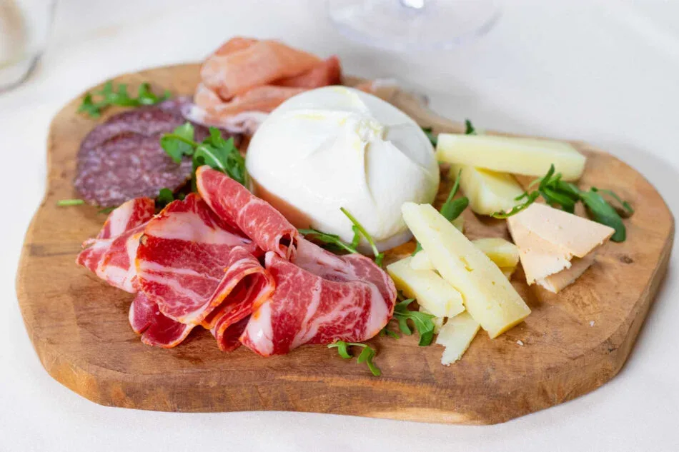

Het begon met Pasquale’s passie voor koken
Die passie ontdekte hij op jonge leeftijd, en hij geniet er nog steeds elke dag van. Sinds 1996 bereidt hij in Ermelo met zijn Italiaanse keukenbrigade de gerechten: van pasta en pizza tot de meest geraffineerde vlees- en visgerechten.

- 1984
Uit Calabrië
Op 17-jarige leeftijd verliet Pasquale Madeo zijn geboorteplaats Longobucco in Calabrië, Zuid-Italië, en vertrok hij naar Duitsland om te werken in een Italiaans restaurant. Daar ontwikkelde hij zijn passie voor de Italiaanse keuken.
- 1988
Naar Nederland
Vier jaar later kwam hij naar Nederland, om in diverse Italiaanse restaurants zijn kookkunsten te verfijnen.
- 1992
Eigen restaurant in Doetinchem en Loenen
Pasquale begon voor zichzelf met een Italiaans restaurant in Doetinchem. Zijn authentieke gerechten en gastvrijheid werden snel bekend in de regio. Daarna volgde een tweede restaurant in Loenen aan de Vecht.
- 1995
Een nieuw avontuur
Hij verkocht beide restaurants.
- 1996
Ristorante Pizzeria Italia in Ermelo
Pasquale opende het restaurant aan de Stationsstraat, waar hij sindsdien met zijn Italiaanse keukenbrigade de gerechten bereidt.
- Nu
Wees welkom
We heten je van harte welkom. Van woensdag tot en met zondag opent onze keuken om 17.00 uur.